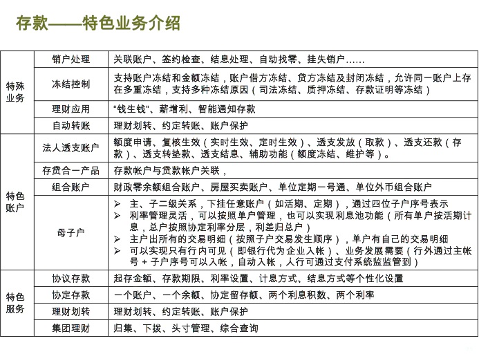
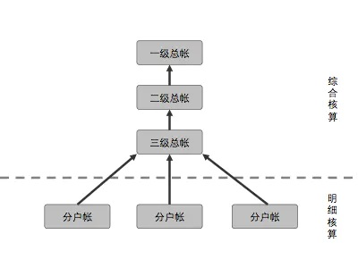

银行核心系统
Table of Contents
银行核心系统介绍
核心银行系统是银行信息系统中实现客户关系管理、产品与服务、业务流程、财务核算与管理、风险管控、辅助管理与决策等银行业务最核心功能的系统，是银行信息系统的基础和核心。
核心银行系统的英文名字 CORE Banking System，其中CORE是Centralized Online Real-time Exchange “集中式在线实时交互”银行系统的缩写，所以，并不是字面意思的“核心”这么简单。CORE是一套银行业务系统的解决方案，每家银行因业务战略不同解决方案也不一样。
银行发展历程
| 名称 | 特征 |
|---|---|
| 手工时代 | 计算机诞生前，纯手工记账 |
| PC单机 | 计算机诞生，开启电子化进程，大大解放了手工操作，提高了记账速度和核算效率 |
| 联网联机 | 随着互联网的发展，网点之间有了网络连接，网点之间的数据可以实时传输、交换，还可以进行联机业务处理，实现了通兑、通存。因为数据和帐务等进行了有效集中，包括科目的设置等都能进行统一。也因为数据的打通，对业务流程也能进行之前无法做到的优化，包括交易的自动化，催生了交易系统的诞生。 |
| 数据大集中 | 中国加入WTO开始金融开放，上一阶段区域性的数据集中已经无法满足服务升级与管理变革的需要，更无法满足高速增长的业务量和业务范围的扩张需求，故需要进行数据大集中，全行一本帐，以适应管理变革的需要。 |
| 以客户为中心 | 2008 年以后，以业务转型为契机，对内以会计核算为中心，面向管理，对外进行业务转型，从传统的以“面向账户”为主转变为以“面向客户为中心”的核心系统。由此产生了“瘦核心”的概念 |
存款
存款指存款人在保留所有权的条件下把资金或货币暂时转让或存储与银行或其他金融机构，或者是说把使用权暂时转让给银行或其他金融机构的资金或货币，是最基本也最重要的金融行为或活动，也是银行最重要的信贷资金来源。
存款类型：
- 定期存款。
- 活期存款。
- 通知存款。通知存款是一种不约定存期、支取时需提前通知银行、约定支取日期和金额方能支取的存款。
- 单位存款。
- 企业存款
- 财政存款
- 基本建设存款
- 机关、团体、部队存款
- 农村存款
- 结构性存款 结构性存款的本质是“存款+期权”，核心还是存款。基于嵌入的衍生品工具可划分利率、汇率、商品、股票、信用等挂钩型产品，形成“低风险低收益+高风险高收益”资产组合。收益可分为两部分，一部分是存款所产生的固定收益，另一部分是与标的资产的价格波动挂钩的收益，能够使存款人在承受一定风险的基础的前提下，在基础收益之上获得较高投资收益。 结构性存款也可称为收益增值产品（ Yield Enhancement Products），是运用利率、汇率产品与传统的存款业务相结合的一种创新存款。 结构化存款更接近于理财。
核心系统中的存款功能
核心一般情况下拥有的存款功能如下：
- 产品管理【维护、复制、删除、查询、组合产品设置、模糊查询】
- 参数维护【额度、基本参数、凭证、账户、控制、杂项】
- 存款开户【单位开户、个人开户、组合产品开户】
- 基本功能【存、取、转、查询、账户信息维护、自动处理】
- 特种业务【产品转换、凭证互转、批量开折、状态调整、利息试算、单户结息、强制结息、签约关系、分户账、账户保护、关联设置、自动支付、收费设置】
- 存款销户【一本通销户、单位消户、个人消户】
- 形态转移、批量销户，账户迁移
- 集团账户【建立、解除、资金归集、资金下拨、头寸管理、查询】
- 冻结控制【法定冻结、法定划扣、账户控制、质押划扣、强制划扣、冻结查询】
- 存款证明【开具、回收、重打、查询】
- 法人透支【透支设置、维护查询、账户还本、逾期转垫款】
- 查询业务【账户查询、交易查询、登记簿查询、理财查询、积数查询、通知查询、综合管理视图】

核心系统模块
- 活期
- 定期
- 计息
贷款
外汇
财务
账务是记录具体业务经办时各种信息的汇总，指实现会计处理进行原始单证的收集、整理、记载、计算、结报等会计处理的具体事务，它要求规范、准确，保证会计核算，会计监督和会计准则的有效实施。
核心的财务组织结构 
系统的帐务结构一级总帐、二级总帐、三级总帐（主帐）和各金融产品的分户帐。总帐部分支撑业务的综合核算，各金融产品各自管理相关产品分户帐，实现业务的综合核算。 各级按科目及账户属性分类进行汇总。其中，三级总帐为对二级科目的进一步细分，系统中也称为主帐，通过此账目的设置，实现了几乎所有的报表都从综合核算层的数据库表中获得数据，实现了明细核算和综合核算的相对分离，确保了核算体系的相对稳定。 综合核算中，科目作为重要的汇总关联参数，而明细核算中（也就是各种金融产品中）科目的出现，都通过科目代号进行表述。这样的设置方法，使得当科目发生变化时，对金融产品的影响最小化，特别针对金融产品的各种重要参数表的调整变得更为简单。
科目字典数据要素
科目代号要素
入账流程
会计分录接口
帐务交易登记分录流水，非帐务交易登记非分录流水，通过流水中的分录标志来区分。流水接口中有原交易流水号和子交易流水号，对一笔交易产生一个原交易流水号，子交易有不同的子交易流水号。 分录流水中除设置机构、币种、核算科目、借贷、金额等主要要素外，还设置了产品、客户种类等要素，便于向产品、客户总帐平滑过渡，同时，为了支持商业银行自身的统计分析需要，增加了可以由银行自行定制的统计编码，，使分录可以从多个角度、多个维度进行分析处理，使分录更具扩展能力。
总账设计结构
独立的总账系统设计
- 按原始货币记账
- 内部预留多账套机制
- 与分录接口模式相结合，可扩展为多维度的总账系统
- 科目分级设置：便于核算，统计
- 本外币一体化
- 对公、对私一体化
整个系统按照大会计思想设计，根据用户需求可以将账务核算主体定义到任意一级
- 支行一本帐
- 分行一本账
- 总行一本账
商业银行将银行整体或一个城市中心或一个支行作为会计核算单位，在一个会计核算系统内，不再有会计网点的概念，而形成在会计核算单位内的一本帐。会计帐由具有较强管理能力的总行或中心或支行来统一管理，同时核算单位之间也不存在往来科目，会计核算单位以下的单位变成了一个个营业网点而非会计网点，它只专心关心自己的业务，而不能涉及会计帐。从而产生一系列优点：
- 减少核算层次
- 提高资金使用效率
- 便于银行作为一个整体开展业务，重新定位各分支行的主营业务方向
- 便于总行有充足的对外支付能力
- 降低金融风险
核心总账处理模式
账户
客户、卡、账户和产品
一类户、二类户和三类户
冻结/解冻
疑问
总账文件跟数据库记录是一样的吗？有了数据库记录，为什么还要总账文件？总账文件如何存储？